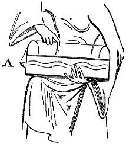
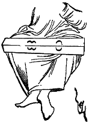
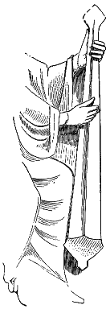
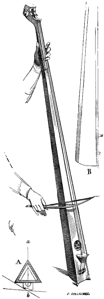

Eugène VIOLLET le DUC
Dictionnaire raisonné du mobilier.
 Figure 1 MONOCORDE, s. m. On désignait ainsi, au moyen âge, deux sortes d'instruments : l'un qui semble n'avoir été qu'un diapason, un moyen de donner le ton ; l'autre fort grand, monté d'une seule corde, sorte de tympanon qu'on jouait en pinçant cette unique corde ou à l'aide d'un archet. Alors il tenait lieu de l'instrument que nous appelons aujourd'hui contre-basse. Les derniers monocordes, ceux qui datent du XVIe siècle, sont parfois montés, en dedans du corps sonore, de plusieurs cordes métalliques donnant un accord par leur vibration1. Le manuscrit de Saint-Blaise2 donne un petit monocorde (fig. 1), touché par une femme assise. Cet instrument se compose d'une boite sonore oblongue, aux extrémités de laquelle sont posés deux petits arcs métalliques formant chevalets. Une corde est tendue d'un arc à l'autre et arrêtée sur un petit cordier latéral A. Il est évident que cet instrument ne pouvait donner qu'une seule note, et remplacer ainsi le diapason métallique actuel.
 Figure 2 La vignette au trait qui est placée en tête du manuscrit de la bibliothèque de Reims intitulé Liber pontificalis3 montre les neuf Muses, Orphée, Arion et Pythagore. Ce dernier personnage tient sur ses genoux un monocorde (fig. 2) qui semble aussi n'être qu'un diapason. Il se compose d'une table d'harmonie percée de quatre ouïes et d'une seule corde tendue dans la longueur de l'instrument. Mais voici (fig. 3), un monocorde pincé par un personnage sculpté sur l'un des corbeaux des portes de la façade de l'église abbatiale de Vézelay (premières années du XIIe siècle), qui n'est autre chose qu'un simple diapason, puisque, de la main gauche, l'exécutant appuie sur la corde près du cheviller. Il fallait nécessairement, pour que ce genre d'instrument pût produire un certain nombre de notes graves, qu'il fût très long : celui-ci a presque la hauteur d'un homme. Le beau manuscrit de Froissart, de la Bibliothèque impériales4, montre un musicien jouant du monocorde avec un archet ; l'instrument paraît avoir au moins 2 mètres de hauteur. Un manuscrit du XIVe siècle, de la Bibliothèque royale de Bruxelles5 possède une vignette représentant un roi jouant un instrument du même genre, mais plus petit et monté de deux cordes, et qu'on appelait alors discorde. Dans ces deux exemples les exécutants appuient sur les cordes vers le bas et font marcher l'archet vers la partie supérieure6. Il est vrai qu'il n'y a point de chevalet indiqué sur la table d'harmonie.

Figure 3

Figure 4Plus tard le monocorde, ou plutôt le diacorde se perfectionne. Le manche est garni d'un doigté ; le cheviller est renversé et muni de roues à dents, avec pivot triangulaires pour recevoir une clef ; les deux cordes passent sur un chevalet dont les pieds sont inégaux. Le corps sonore, vide au bas, est triangulaire, composé de trois ais, et la table d'harmonie est percée d'une ouïe. Cet instrument (fig. 4), ne remonte guère au delà des dernières années du XVe siècle. Il était joué avec un archet, comme la contre-basse moderne. En A, est tracé, la base de l'instrument avec la position et la forme du chevalet ; en B, la coupe du corps sonore sur la ligne ab7.
Notes :
(1) On voit un de ces grands instruments, qui n'a pas moins de 2 mètres de hauteur, dans la collection de M. Fau.
(2) Voyez l'abbé Martin Gerbert, De Cantu et musica, lib. III, cap. III.
(3) XIIIe siècle.
(4) Tome Ier (XVe siècle).
(5) No 9002.
(6) Ces deux vignettes sont reproduites par M. de Coussemaker, dans les Annales archéol. t. VIII, p. 246.
(7) Voyez un de ces instruments figurés dans le Der Weiss Kunig, par Marc Treitzaurwein : Récit des actions de l'empereur Maximilien, pl. 28.